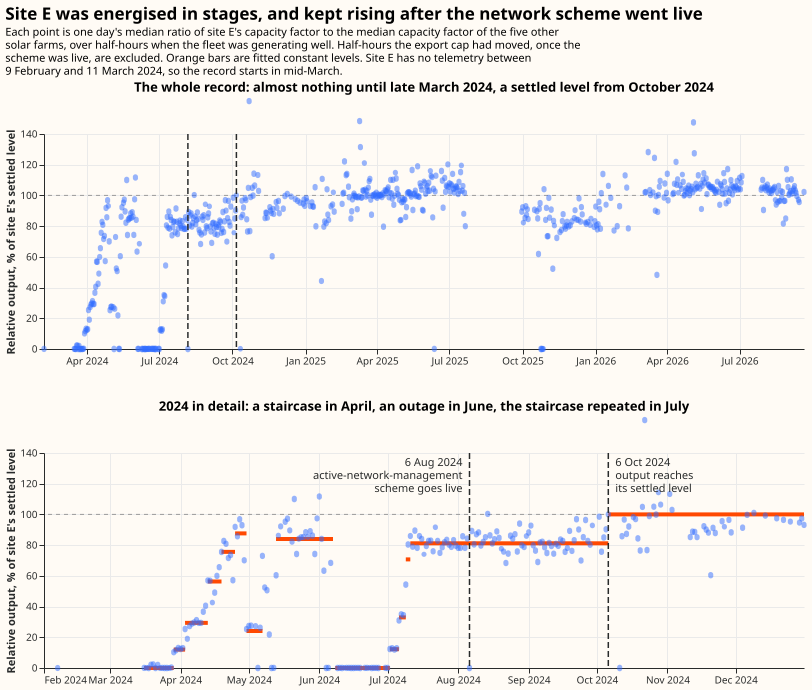

NGED's network and its data
This page is the physical context the rest of the docs assume: what NGED operates, what generation is connected to it, and the ways the trial-area telemetry misreports what it measures. NGED is a distribution network operator (DNO) in Great Britain, and its network (as of May 2026) consists of:
- 1,161 primary substations (33/11 kV and 66/11 kV)
- 271 bulk supply points / BSPs (132/33 kV and 132/66 kV)
- 52 grid supply points / GSPs (400/132 kV and 275/132 kV)
- ~1,500 industrial customer generators (not domestic); roughly 558 at 33 kV or 132 kV connected to GSP/BSP busbars, and ~1,000 on the 11 kV network downstream of primaries

Embedded generation on the network
NGED's Embedded Capacity Register records what generation is connected. The register (August 2026) lists 5,958 MW of connected solar and 1,456 MW of connected wind. Hydro is a much smaller presence: 41 connected hydro sites totalling 25.7 MW across all four licence areas — South Wales 13.7 MW over 10 sites, South West 6.2 MW over 18 sites, East Midlands 5.3 MW over 8 sites, West Midlands 0.5 MW over 5 sites — under half a percent of the connected solar capacity.
The hydro fleet is overwhelmingly small run-of-river with no storage. 39 of the 44 hydro entries
are Hydro - Run of river, and 29 of the 41 connected sites join at 0.4 kV, so output tracks
catchment flow almost directly. The largest connected schemes are Llyn Brianne (5.45 MW, Dyfed),
Elan Valley (4.0 MW, Powys), Chatsworth (3.7 MW, Derbyshire), Mary Tavy (2.6 MW, Devon), and
Ystradffin (1.99 MW, Dyfed). One entry is much larger — a 58.5 MW Cwm Rheidol scheme accepted to
connect in the South Wales area — but its target energisation date is 2037. The 41 connected sites
are spread across 32 distinct primary substations, so no primary is hydro-dominated.
Active network management caps what a generator may export
A generator connected under active network management (ANM) may export only up to a cap the network operator moves in real time, so its output is the smaller of what the weather allowed and what the cap permitted. A flexible connection of this kind is what lets a generator join a network with no spare firm capacity: instead of waiting years for reinforcement, it accepts being turned down when the local network fills. For anything that predicts generation from weather, the capped hours are unpredictable by construction — no irradiance or wind field carries the state of the network.
NGED holds two records of it, and they are different quantities. The curtailment/
prefix on the same S3 bucket as the
telemetry publishes a derived half-hourly volume of megawatts lost. Separately, NGED can export the
raw setpoint history on request: one row each time a generator's export cap changed, in megawatts,
which is the signal the derived volume is computed from. The cap is published as a negative number,
because generation is negative in NGED's sign convention, and the largest magnitude a generator's
cap ever reaches is its connection limit rather than a curtailment. Reading that limit as a
curtailment volume inverts the signal.
One generator in the trial area is connected under active network management, and NGED has confirmed there are no others. A site with no setpoint history is therefore uncapped rather than unrecorded, which is what makes the absence of a cap usable: a missing record is a real absence of curtailment and not a gap in what we hold.
On that generator, the cap sits at the connection limit for 80.7% of the half-hours since the scheme went live on 6 August 2024. Over those 25 months the rest of the record divides four ways:
- zero, for 11.9% of the half-hours;
- 1.3% of the connection limit, for 3.6%;
- just under the connection limit, for a further 2.7%;
- somewhere in between, for the rest.
The zero periods run long — the cap sits at zero continuously from 21 July to 8 September 2025, close to 49 days — and look like outage or works rather than the minute-by-minute trimming the rest of the record shows. Where the cap never left the connection limit, that generator's output per unit of irradiance matches the other five photovoltaic sites in the trial area to within half a percent, which is the check that says the cap is being read the right way round. The beam/diffuse results set out the measurement.
The setpoint feed exists before the scheme enforces anything, and reads zero while it waits. The export reaches back to the day after the generator's telemetry begins, six months before the scheme went live on 6 August 2024. Through those six months the cap forbids export in all 431 of the bright hours it covers — yet the generator exported above 5% of its capacity in 423 of them, at a median of 44%. A cap that permits 44% output is not being enforced. Anything consuming this feed has to find the date the scheme went live and discard what precedes it, or it will read a plant running normally as a plant held at zero. The first half-hour at which the cap reaches the connection limit is the marker we use, because a live scheme on an unconstrained generator rests at that limit most of the time.
Curtailment is not a capacity loss, which is why the two records matter beyond forecasting. A turned-down generator is still physically capable of its full output, so effective-capacity estimation has to hold curtailment out rather than absorb it.
Data quality in the trial area
As is typical of distribution networks, NGED's distribution-level telemetry carries more gaps and measurement artefacts than transmission-level telemetry. The sections below are the issues observed in the trial area, each a distinct phenomenon rather than one fault seen several ways. See the "Data sources" section of our Milestone 1 report for a more detailed discussion, and plenty of graphs.
NGED Data Availability
Availability of the data for the 32 time series in the trial area:

Early ramp-up period
The first couple of months after a meter is installed tend to have poor data quality. Poor data
quality in that period is handled by simply dropping the first 2 months of each time series. 
A new solar farm reaches full output in stages over months
A newly connected solar farm does not produce its rated output from its first day of telemetry: one of the six metered solar farms in the trial area climbed to its settled level through eight months of discrete steps. The site is the one labelled E in the beam/diffuse results. Measured as its daily output divided by the median output of the other five solar farms — a ratio that cancels cloud, season and time of day — it holds flat for several days at a time at 12%, 29%, 56%, 76% and 88% of its settled level through April 2024, drops back, climbs again through 12%, 33% and 71% in July after a 24-day outage, plateaus at 81% from 11 July, and only reaches 100% on 6 October 2024.

The deficit is a fixed proportion of what the weather allowed, which is what separates a part-built array from every other way a site can fall short. Binned by how hard the rest of the fleet was generating, the site's relative output is 79% to 85% at every decile from the dimmest to the brightest. An undersized inverter would clip only the brightest hours, and an export cap would hold the site at a fixed number of megawatts rather than a fixed fraction. Only a fraction of the array being energised produces a flat ratio.
The steps are invisible in the site's own record and appear only against a reference. A solar farm generating at a third of its capacity on a bright day looks exactly like a solar farm generating at full capacity under cloud, so nothing in the single series distinguishes them. Detecting the ramp needs either a nearby site generating under the same sky or a weather model, and the fleet median needs no weather data at all.
This is a different fault from the meter ramp-up above, and it lasts far longer. Poor data in the first weeks after a meter is installed is a metering problem, fixed by dropping a fixed window. A commissioning ramp is a real measurement of a plant that was genuinely smaller than its capacity record says, it runs for months rather than weeks, and it ends on a date that has to be found per site rather than assumed. A model fitted on the settled plant overshoots every one of these rows by construction, and a capacity estimator reading them at face value would understate the site.
A uniform metering correction would leave the same trace, and nothing in the telemetry separates the two. A change of current-transformer ratio or scaling factor applied at the end of the ramp would also show up as a flat proportional step. Either reading leaves the early rows measuring a different quantity from the rest of the site's record, which is the reason to exclude them. The date the ramp ends is bracketed rather than sharp, because the winter months that follow it carry a fifth of summer's usable half-hours.
False zeros
Substation time series occasionally report zero when the true value is non-zero. These are
identifiable because they are isolated amongst non-zero values.  .
.

Stuck values
Some time series go "stuck" for hours or days (standard deviation near zero over a 24-hour window).
Missing data
Gaps range from a few half-hours to months. Solar farms frequently have no data overnight
(expected), but also have unexplained daytime gaps. 
Examples of missing data from two solar sites in the trial area, time series 23 and 29. Time series 29 has a known analogue metering issue.
Apparent power (MVA) metering
Some substations only have MVA meters, which report the absolute value of power flow — they cannot
detect direction. When generation exceeds demand and power flows "backwards", the MVA reading
increases rather than going negative. This "bouncing off zero" behaviour looks like a demand
increase but is actually reverse power flow. In the trial area, 10 sites are metered in apparent
power. Of those 10 sites, one site, and possibly two more, have shown reverse flow on sunny days.
The following figure shows power flow for Stickney primary (time series 14) and a nearby solar site
(time series 22); note the absence of peaks at Stickney primary on 3 and 4 May, when the solar site
generated less: 
Switching events
Power is periodically diverted from one substation to another during maintenance or in response to faults ("abnormal running arrangement"). Each substation spends roughly 10% of its operating time in an abnormal arrangement. Switching events severely bias lagged-power features (the single most informative feature for demand forecasting) if not detected and handled. Switching Events describes how to recover the demand that would have been metered under the normal running arrangement; the staged solution plan is in the roadmap (v0.6 detector → v2 mixture models).
Behavioural calendar effects on demand
GB electricity demand depends on human behaviour as well as on weather, and a plain day-of-year feature cannot represent the calendar's sharp cases. Easter wanders across roughly 5 weeks of the calendar, from late March to late April, so its behavioural signature smears into "normal spring" unless an explicit holiday feature marks it. The bridge days around bank holidays and the Christmas–New Year "run of Sundays" are milder versions of the same problem, and school half-terms vary by county across NGED's licence areas. Demand on a bank holiday already looks like a Sunday, and the Christmas–New Year fortnight is its own regime.
Major broadcast events shift and synchronise demand too. England playing in the later stages of a Football World Cup shifts and synchronises evening demand across the country, including the classic half-time TV-pickup surge. Unlike bank holidays, sporting fixtures of this kind are not knowable years ahead.